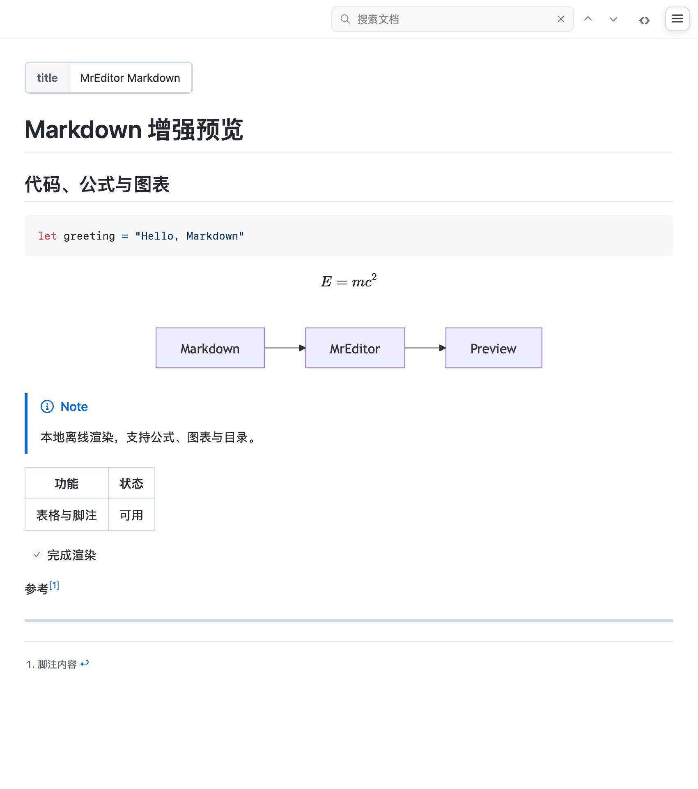

大文件，也能从容阅读
按需读取与可见行绘制，配合后台搜索、实时筛选和跟随末尾，专注于日志中的线索。
大文件 · 正则搜索 · 实时 grep从一份 Markdown，到不断增长的日志。
阅读、筛选、预览、对比，都在一个原生工作区。
macOS 13+ · 原生 Swift / AppKit · 下载即将开放
从海量日志里，只看真正重要的那几行。
不必为了不同的文本，打开不同的工具。
让内容决定视图，让思路保持连贯。
按需读取与可见行绘制，配合后台搜索、实时筛选和跟随末尾，专注于日志中的线索。
大文件 · 正则搜索 · 实时 grepMarkdown 源码与预览同步滚动。代码、公式、表格与 Mermaid 图表，边写边看。
Markdown · KaTeX · Mermaid展开 JSON 树，浏览 CSV 表格，逐条检查 NDJSON。让一长串文本变成可读的数据。
JSON · CSV / TSV · NDJSON并排查看行级与字符级差异，逐块采纳修改。将合并结果独立保存，保留原始文件。
文本对比 · 并排合并 · 差异导航原生窗口、多文档侧边栏、快捷键和 Finder 快速查看。轻松融入你习惯的工作方式。
Swift / AppKit · Quick Look通过 SSH 浏览服务器文件，按需读取日志、在服务器侧筛选，并持续跟随新的内容。
SSH · 跳板机 · Keychain用关键词和正则缩小范围，保留前后文，再跟随最新输出。无论文件在本地还是远程，都能沿着线索继续查。
ERROR payment正则ERROR payment timeout
request_id=8f2a · retry=1ERROR payment declined
request_id=8f3c · status=402ERROR payment timeout
request_id=8f41 · retry=2
Markdown 渲染器 · 真实测试截图一份技术文档，可以同时有文字、公式与流程图。TextStack 将它们放在源码旁，让编辑和阅读成为同一件事。
预览资源随应用提供。普通文档预览无需联网。
支持简体中文、英文和日文界面。
文件、草稿与工作节奏，留在你熟悉的 Mac 上。
它主要面向日志、结构化数据和 Markdown，也支持日常文本与代码阅读。日志筛选、数据检查器、实时预览和文本对比，分别对应不同的工作场景。
TextStack 是 macOS 原生应用，最低系统版本为 macOS 13。它使用 Swift 与 AppKit 构建。
本地文本编辑、数据检查和普通 Markdown 预览不需要联网。连接 SSH 服务器、检查更新或使用自行配置的 AI 服务时需要网络。
分栏预览面向不超过 8 MiB 的文件；更大的文件使用大文件编辑器。表格、文本预览和 Finder 快速查看也有各自的内容限制。
公开下载尚未开放，价格与购买方式也尚未公布。发布后，这个页面会提供正式下载与购买入口。
TextStack 正在准备公开发布。
macOS 13+ · 敬请期待